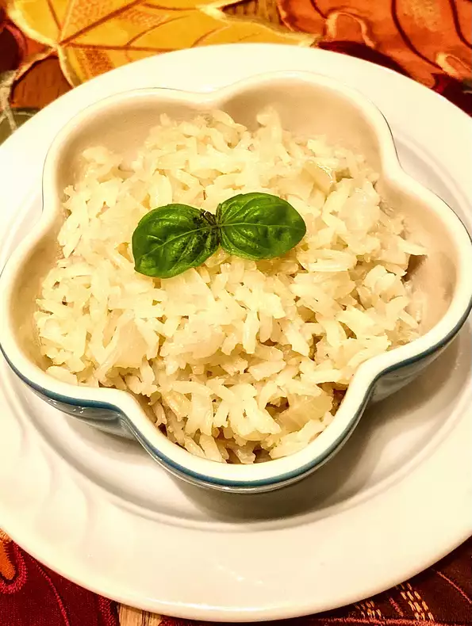

Simple Rice Recipe

Description
This is a very simple but tasty rice recipe. Makes a great side dish and leftovers are almost as good the next day.
Ingredients
- 1 tablespoon olive oil
- 1 cup long-grain white rice
- 1 pinch garlic salt, or to taste
- ½ small onion, finely diced
- 2 cups low-sodium chicken broth
Steps
- Heat olive oil in a non-stick saucepan over medium-high heat nearly to smoking. Cook and stir rice in the hot
oil
quickly to toast the rice, 2 to 3 minutes. Stir the onion into the rice; cook and stir 1 minute more. Pour chicken
broth
over the rice mixture, season with garlic salt, and bring to a boil; reduce heat to low, place a cover on the
saucepan,
and cook until the broth is absorbed and the rice is tender, about 20 minutes. Remove from heat and allow to rest
5
minutes before lifting the lid.